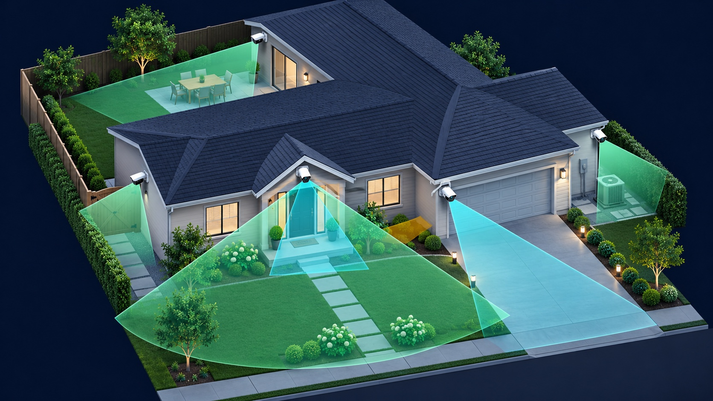
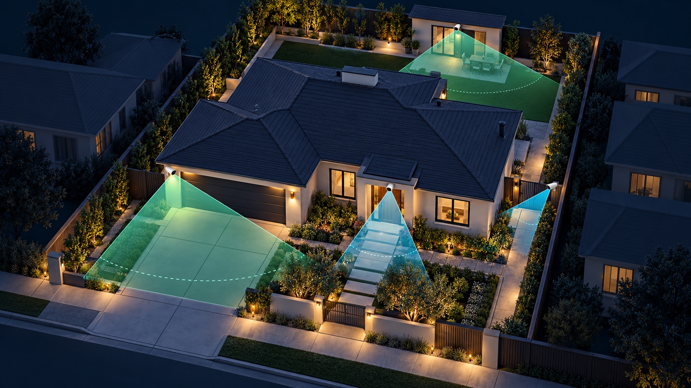
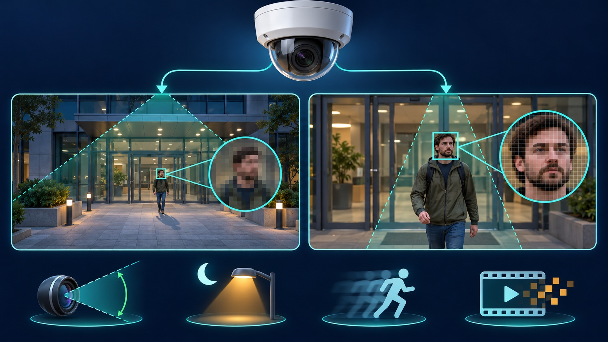

The right camera count is the number of distinct views needed to meet your security goals—not a number based on square footage. List the entrances, approaches and activity areas that matter, decide what detail each view must capture, and then test whether one camera can do each job without stretching the image too wide.
Two homes with the same floor area can need different systems. One may have a single front approach and attached garage; another may have a long driveway, side gates, detached garage and rear alley. Walls, landscaping, rooflines, lighting and the distance to each target change what a camera can actually see.
A package labeled for a “small” or “large” home cannot account for those conditions. Start with a coverage map, then choose equipment.
Walk the property and write one sentence for every result you want. Common jobs include:
Do not count a camera yet. Count the jobs. Several nearby jobs may share one view, while one difficult area may need both an overview and a tighter detail view.
Axis recommends defining the use case before selecting a camera. Its planning guidance distinguishes wide overview coverage from views intended to provide detailed information. The difference depends on field of view, distance, angle and how many pixels cover the target—not just the camera's advertised resolution.
For every coverage job, choose the result:
These are planning categories, not guarantees. Lighting, motion, face angle, focus, compression and lens quality still affect the recorded result. Our camera resolution and pixel-density guide explains the detail tradeoffs.
A wide camera can show where someone came from and what happened, but spreading the image across a broad yard reduces detail on a distant face. A narrow view at a front walkway, gate or driveway entrance can place more pixels on the target while the overview camera preserves context.
Do not assume one panoramic or ultra-wide camera replaces several purpose-built views. Axis notes that a wide panoramic scene can be excellent for overview coverage while recognition or identification is primarily available closer to the camera. Digital zoom cannot restore detail that was never recorded.
On a simple property sketch, mark each proposed camera and draw its viewing cone. Check for:
Some overlap is useful for continuity and resilience, but duplicate views should be intentional. See our detailed home camera placement guide for mounting and approach planning.
A camera location is only practical if power and data can reach it safely and the recorder can support the added stream. Check cable routes, PoE capacity, Wi-Fi signal where applicable, recorder channels, storage and the actual recording mode. A camera that appears in the app but is not saving usable video does not complete a coverage job.
If you are comparing architectures, use our wired-versus-wireless guide. For storage, estimate from real bitrate and recording settings with our retention planning guide.
Combining jobs can work when the targets are close together, at similar distances and under similar lighting. For example, a properly placed front camera may cover both the walkway approach and the door. It is less likely to deliver useful detail at both a nearby porch and a distant street because each target occupies a very different portion of the image.
Lens selection matters. Axis explains that focal length controls field of view: a longer focal length narrows the view, while a wide-angle lens shows more of the scene. The correct choice depends on the distance and evidence goal for that specific camera.
The resulting number is your starting camera count. It may be lower or higher than a package recommendation because it is tied to actual views and outcomes.
The final answer comes from recorded video, not the drawing. Have someone walk every route in daylight and after dark. Review the saved footage at normal speed and frame by frame. Confirm that the person remains visible through the handoff between views and that the detail camera captures the face or action at the planned location.
Also test with realistic conditions: exterior lights on and off, vehicles in their normal positions, doors opening, and expected motion. If the recording fails the goal, first adjust placement, aim, focal length, focus, exposure or lighting. Add another camera only when one view cannot perform both jobs reliably.
Tech Secure 360 can map coverage jobs for a Greater Los Angeles home, plan overview and detail views, and verify the recorded result in the real lighting and distances at the property.

Plan views around entrances, approaches, lighting and recorded detail.

Choose resolution from field of view, distance and the evidence goal.

Separate power, network, recording and remote-access decisions.
Tell us about your place and we'll respond within one business day with a tailored plan and pricing. Or call us right now.
Your request is in. A Tech Secure 360 specialist will reach out within one business day. Need help now? Call (747) 336-2737.